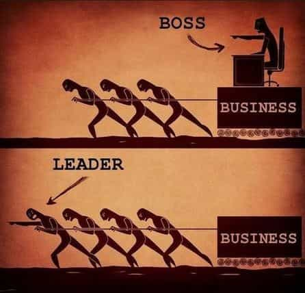

< < < Back
Modern Workplaces Demand A High Price For Promotion – Return Of Kings
Promotion Not Pay Raise
For most men, there will come a time in their professional lives when they will have to ask themselves an important question: how much is advancement worth to them, and is it worth the price? Now this may seem like a very simple question at first, and an obvious no-brainer, but is it really? Sure, every man generally has a desire to be successful in their chosen field or occupation, but the concept of “successful” is subjective, and the terms “successful” and “advancement” are not necessarily synonymous.
Initially, most men will probably tend to associate the concept of “successful” with financial success. However, upon further introspection may also associate success with less tangible measures, such as professional or academic recognition, status, skill, contentment, happiness, stability, or even personal satisfaction. Now obviously most men would like to earn more money in their chosen occupations, and therefore seek financial advancement in the forms of pay raises or moving up the pay scale, but that is not the kind of advancement which I am referring to. For the purpose of this essay I am referring to advancement in the form of promotion, or “climbing the ladder” so to speak, which may or may not be tied to pay increases.
Playing The Game
Now, please do not misunderstand me: I am not at all saying that a man should not have drive and ambition to succeed and advance in his career. If you are a man lucky enough to be in an occupation or organization where promotional advancement is generally objective and merit-based, then by all means set the bar high for yourself and strive for excellence.
Sadly, this kind of objective merit-based promotional process is extremely rare in 21st century America. In today’s professional environments, a man is contending with far more than just his own abilities versus those of his peers. He is also fighting an uphill battle against an ever-growing progressive system. Today, promotional consideration in most professional fields will encompass far more than just a candidate’s merits and abilities, and will also include factors such as political correctness, quotas, affirmative action, protected classes, fairness, social justice, and feminization, just to name a few.
On top of all these “political” considerations, there are also the age-old factors of nepotism, networking, and the “good ole boys club” to contend with as well. The old saying “it’s not what you know, it’s who you know” is still alive and well today. Yet where once a man could essentially get ahead on his own merits, skills, knowledge, and perhaps a little “networking,” advancement today in most professional settings requires not only those things, but also jumping over “political” hurdles and navigating the treacherous waters of political correctness as well. It requires a man to “play the game” more heavily and more skillfully than ever before.
So What Is The Price
Is “playing the game”, and what you hope to accomplish by it, worth the cost and sacrifice to your own honor, dignity, values, integrity, self-respect, and character? Some men may have absolutely no issues whatsoever with becoming a “company man” and “playing the game,” as long as it means future advancement and promotion for them. They see nothing wrong with kissing the right asses, sucking up, becoming a “yes man,” conveniently being in the right places to be “noticed” by superiors, doing favors for the “right” people, making “friends,” being politically correct when necessary, and basically doing whatever it takes to get ahead no matter what the cost. To these men, achieving their goals of advancement is worth the kind of self-degrading behavior necessary to reach them.
Yet sometimes the cost of advancement goes far beyond that of just being a spineless sycophantic kiss-ass, and falls into the realm of treachery. For some, “playing the game” also involves lying, cheating, deception, gossip, rumors, taking credit for others’ work, throwing others “under the bus,” stabbing peers in the back, or various other selfish methods of making yourself look good at the expense of others.
For some who may already have supervisory positions, yet who wish to advance themselves further, it may mean putting their own interests and well-being before those of their men. This could include things like not supporting their men in the face of superiors, not looking out for the best interests of their men, using the hard work of their subordinates only to make themselves look better, or even blaming their subordinates instead of taking accountability when things go wrong.
If by chance these types of managers do support their men, it is only because doing so aligns with their own self-interests and benefits them in some way. This kind of piss-poor leadership is personified in the fictional character of Colonel Cathcart in the classic Joseph Heller novel Catch-22. In the novel, Cathcart cares more about his own promotion and advancement than the well-being of the men under his command. His concern about pleasing his superiors in order to gain favor is at the direct expense and safety of the men under his command flying combat bomber missions in WWII.
In the novel, Cathcart would regularly volunteer his squadron for dangerous missions, while never flying any missions himself. This kind of behavior is illustrative of the classic distinction between a true leader, and merely a supervisor.

Whether it is “playing the game” by ass-kissing, treachery, or any combination of such, these men have either consciously decided that selling out their character is worth it, or for some, doing these things would not even constitute selling out at all because they have no character to speak of. If you are a man lacking character, or see nothing wrong with what I have discussed above…congratulations, you are part of the problem.
For Those Not Willing To Compromise
So now some may look at this essay as an excuse for defeatism, or for justifying a lack of ambition. That is far from my point. As I said before, if you are lucky enough to be in a field where advancement is objective, and merit based, then by all means set high goals for yourself.
So then, what is a man who refuses to sacrifice his character, principles, and dignity just to advance in his career to do? To begin with, he should always strive for excellence, proficiency, and professionalism in his chosen field, regardless of advancement opportunity, and should always work hard at performing his job to the absolute best of his abilities. He should pursue advanced training and education opportunities when available in areas of personal interest or direct job applicability, rather than those classes meant to simply “pad a resume.”
He should also strive for self-education and self-improvement in his field, by reading, studying, and practicing. Improving one’s proficiency or finding a personal niche or passion will help provide self-confidence and self-satisfaction, regardless of whether or not it helps you advance. He should also try to maintain a professional and respectful relationship with his peers and superiors, while avoiding anything that would compromise his dignity and constitute “ass-kissing.”
A red pill man should also avoid office “drama” and gossip like the plague, and steer clear of those who perpetuate it. Most importantly, he should remain stalwart in the integrity, values, dignity, and principles which he refuses to compromise simply in the name of promotion. If perhaps one day the opportunity arises to be noticed and promoted based on merit, character, and achievement, then he can hold his head high knowing that his position was earned without sacrificing his character.
In Conclusion
Honestly though, the most important thing to remember for a man who refuses to compromise his character is that, in the end, it’s only a fucking job. There is far more to life than just your career. As the saying goes, no man on his death bed ever wished that he had spent more time at the office.
Read More: The Price I Paid For Helping A Single Mom’s Child


{kind=link}